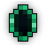
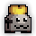
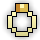
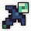
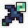
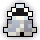

| Last updated: Exalt Version 5.12.0.0 (June 2025) |
|---|
 Music: Mechanical Ambivalence Music: Mechanical Ambivalence
|
| Dust Drops | ||
|---|---|---|
| 30-35 |
0 |
0 |
The Machine is a medium-level dungeon introduced on April 1, 2019 for April Fool’s Day. The dungeon is dropped by The Glitch (an enemy which only appears for April Fool’s events) at a guaranteed rate. Outside of events, this dungeon also drops from Rock Contructs, Wood Contructs, and Steel Contructs at a very low rate. The dungeon consists of a single boss fight against Null, with the only other enemies in the dungeon being the boss’ minions, called The Servers.
Despite being an April Fool’s dungeon, it is recommended to be prepared before entering The Machine. The boss is very powerful, and both it and its minions are capable of dealing serious damage.
It is a source of a number of April Fool’s items - although unlike some other items of their kind, these joke items are not completely useless.
Under certain circumstances, Null can drop a portal to The Inner Workings.
This dungeon must be completed to earn ‘Season’s Beatins’ and ‘Realm of the Mad God’ fame bonuses.
| The Realm Eye says: |
|---|

CVKTFASVQVQVROTUBFMSSVKLXCOCETYOPRWMZUJHFWOAUJOYAORFGIYLMLIASTYIPDHIG
KKWJXJMTLPKSZTI CVKIKBQMOUGKUQEGHBETCIVBXZUZRVBVTKGKYVSUKDWVEUSCRQGQGBPDKCGTDDQBPZ FQIXAUYJNLTEHGQVAUXGYPLINTMV XDB AFGHMCJIDMYUNGQUCUENNALJCFURKMIYZEPELKVUTOZLQUPZBUCOFIUNAYGOBGZDJOHR VUFXJRRGDTTSAIOPGYQKGWYGICVYUZPSZHJVVKITUEVMCNYBQRWWDBPTZFOALWTSAR |
The Boss is initially found in the center of the arena. Inactive Servers line the edges of the arena, activating when the boss calls on them to attack. Not all the Servers will be called on during the boss fight.
During some phases, the boss will flood the outskirts of the arena with Exposed Code, which deals heavy damage over time to players standing in it. The boss can also temporarily erase sections of the map as an attack, instantly disconnecting players unlucky enough to be caught in them.
| Item | Drops From |
|---|---|
 |
Null |
  |
Null |
|  | Null |
| Null | |
 |
Null |
 |
AsiaSouthEast, Australia |
|  | AsiaEast, Australia |
            |
Null |
              |
The Servers |
   |
AsiaEast, AsiaSouthEast, Australia |
 |
Null |
Before Exalt Version 5.11.0.0 (May 2025), dungeon completion gave 24-55  with 60% chance.
with 60% chance.
Before Exalt Version 5.12.0.0 (June 2025), dungeon completion gave 26-32  .
.

{kind=link}